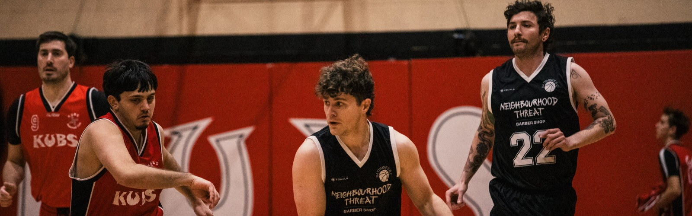

Fixtures & Results
This season
Fixtures
Most dates are still being agreed with the opponents. The season calendar is posted on the club’s Instagram, @rathmines_bc.

This season
Most dates are still being agreed with the opponents. The season calendar is posted on the club’s Instagram, @rathmines_bc.